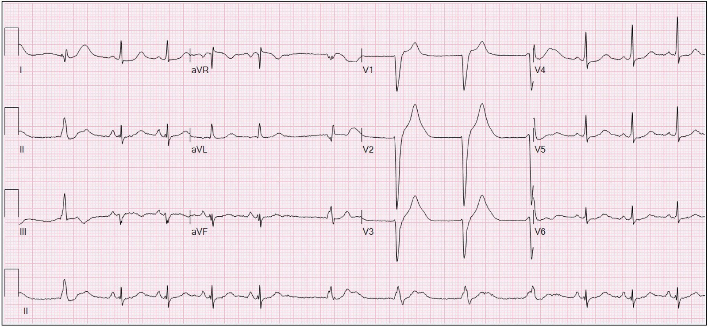
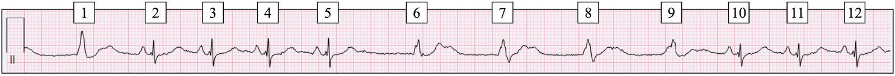
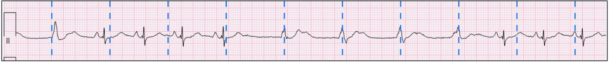
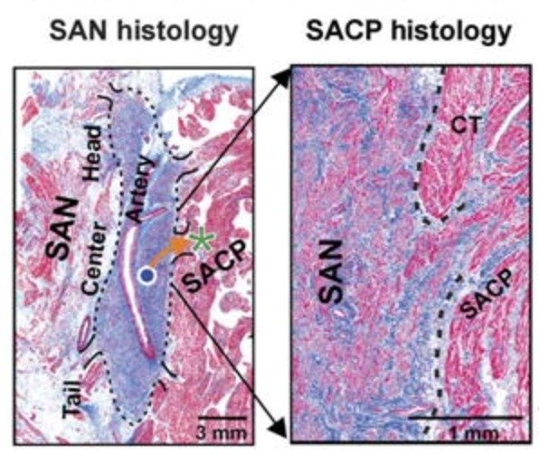
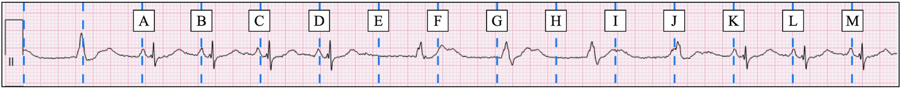
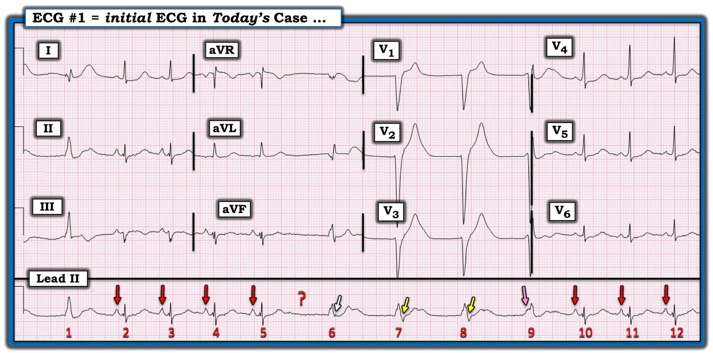
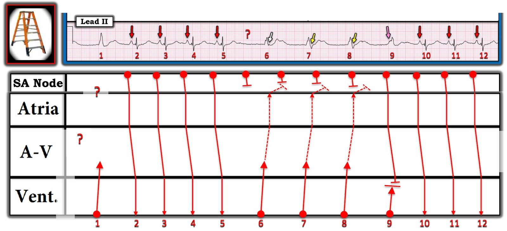
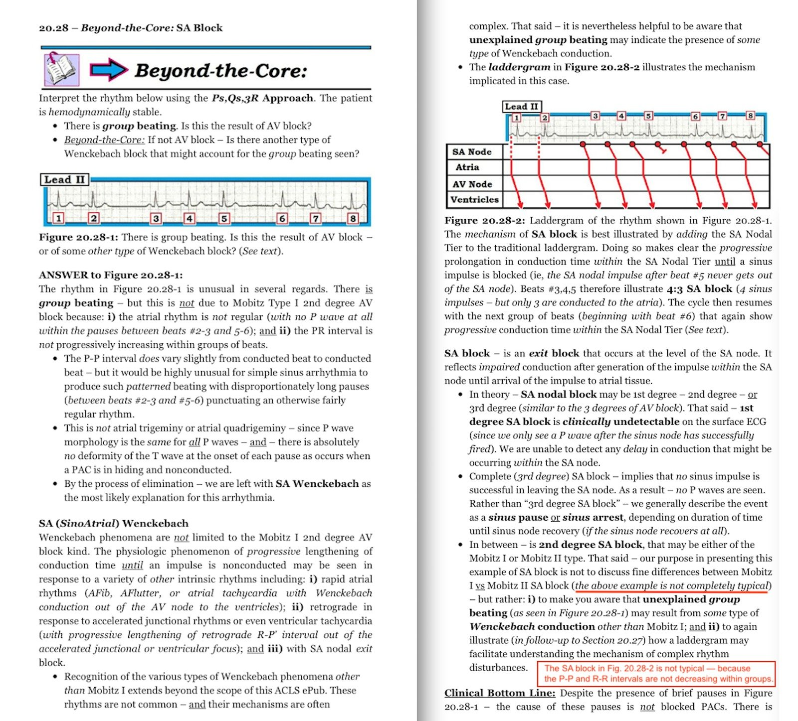
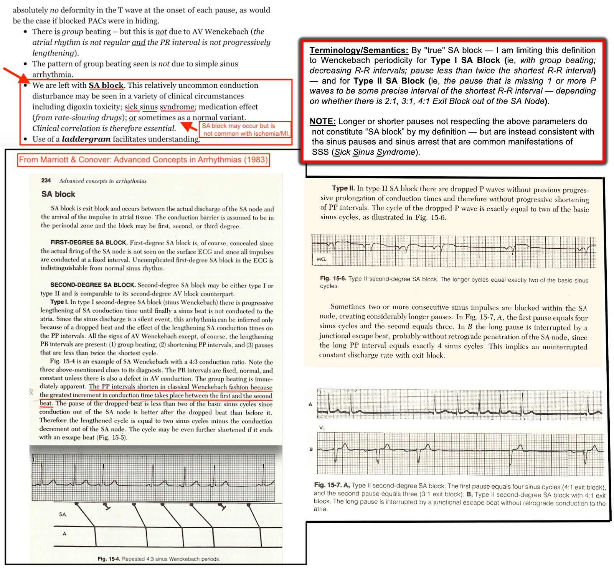

14/08/2024 — Sóng P đã đi đâu?
Bản dịch tiếng Việt của bài "Where did the P waves go?" – Dr. Smith’s ECG Blog. Giữ nguyên toàn bộ 12 hình ảnh của bản gốc.
Tác giả: Willy Frick
Tôi đang đọc lần lượt các điện tâm đồ trong danh sách chờ thì thấy bản ghi dưới đây. Bạn nghĩ gì về nhịp này?


Thoạt nhìn có vẻ như có rất nhiều biến đổi đang diễn ra, nhưng nếu tập trung vào từng phần của điện tâm đồ một thì ta có thể hiểu được nó. Hãy bỏ qua phức bộ QRS đầu tiên và nhìn vào các nhát từ 2 đến 5. Tôi đã đánh số chúng bên dưới để tiện theo dõi:


Ta thấy sóng P dương ở các chuyển đạo I, II và aVF, và âm ở aVR. Điều này phù hợp với nhịp xoang. (Xin nhắc lại rằng nhịp xoang không được xác định bằng “một sóng P trước mỗi QRS và một QRS sau mỗi sóng P.”) Điều gì xảy ra sau đó? Các sóng R từ 6 đến 9 không có sóng P đi trước và cách nhau đều đặn một cách đáng ngờ. Nếu ta đặt compa đo (calipers) giữa sóng R 6 và 7 rồi “dò bước” theo cả hai hướng, ta thấy như sau:


Cụ thể, có bốn phức bộ rộng cách đều nhau, không có sóng P đi trước. Nói chung, điều này phù hợp hoặc với tạo nhịp thất, hoặc với nhịp thoát thất. Nhịp thoát nhìn chung cực kỳ đều (khác với nhịp xoang vốn có một chút biến thiên tự nhiên về độ dài chu kỳ). Bệnh nhân này không có máy tạo nhịp, nên đây hẳn là nhịp thoát thất.
Sau đó, ta thấy nhịp xoang bình thường trở lại ở các nhát từ 10 đến 12. Vậy tại sao nút xoang dường như ngừng phát nhịp trong vài giây ở giữa điện tâm đồ?
Trả lời: Nút xoang vẫn phát nhịp suốt thời gian đó, nhưng blốc đường ra (exit block) ngăn nó khử cực vùng nhĩ xung quanh. Giải thích thêm, nút xoang (còn gọi là nút xoang nhĩ) được cách điện với cơ tim nhĩ xung quanh, điều này có lẽ giúp bảo vệ tính tự động khỏi bị tăng phân cực do các tế bào cơ nhĩ gây ra [Csepe]. Các mặt sóng khử cực đi ra khỏi nút xoang qua một hoặc vài đường dẫn truyền xoang nhĩ (sinoatrial conduction pathways, SACP), như thấy trên lát cắt mô học dưới đây, lấy từ Li và cs.


Đường dẫn truyền này (tức là mũi tên màu cam) có thể bị blốc, dẫn đến việc xung động của nút xoang nhĩ không khử cực được vùng nhĩ xung quanh.
Điều này có thể biểu hiện thế nào trên điện tâm đồ bề mặt? Mỗi khi vị trí đường ra của nút xoang bị blốc, sẽ vắng mặt một sóng P. Quay lại dải nhịp của chúng ta dưới đây:
Ta có thể đặt compa đo lên các sóng P ở nhát 2 và 3 rồi dò bước tiếp. Tôi đã thêm nhãn để tiện theo dõi:


Giờ thì rõ ràng là các xung động xoang từ A đến D đã thoát ra khỏi nút xoang thành công và tạo ra sóng P. Các xung động E, F, G, H và I bị blốc. Xung động J có lẽ đã thoát ra thành công, nhưng sóng P tạo ra bị vùi lấp bên dưới nhát thoát thất, và các xung động K, L và M cho thấy dẫn truyền xoang nhĩ trở lại bình thường. (Ngoài ra, có vẻ như một vài xung động xoang ở đầu dải nhịp cũng bị blốc.)
Có một số loại blốc đường ra xoang nhĩ (SA exit block), tương tự như blốc AV:
- Blốc đường ra SA độ một được định nghĩa là thời gian dẫn truyền SA kéo dài, và không thể chẩn đoán trên điện tâm đồ 12 chuyển đạo.
- Blốc đường ra SA độ hai loại I được định nghĩa là thời gian dẫn truyền xoang nhĩ kéo dài dần, sau đó là một xung động bị blốc rồi chu kỳ được thiết lập lại. Điều này (trái với trực giác) dẫn đến khoảng P-P ngắn dần, một sóng P bị rớt, và chu kỳ lặp lại.
- Blốc đường ra SA độ hai loại II được định nghĩa là nút xoang từng lúc không khử cực được vùng nhĩ xung quanh, như trong bài này.
- Blốc đường ra SA độ ba được định nghĩa là tất cả các xung động xoang đều không khử cực được vùng nhĩ xung quanh. Trên điện tâm đồ bề mặt, không thể phân biệt nó với ngưng xoang.
Bệnh nhân này cần được theo dõi sát để phát hiện bằng chứng tiếp diễn của rối loạn chức năng nút xoang, và cuối cùng có thể được hưởng lợi từ tạo nhịp vĩnh viễn.
Tài liệu tham khảo:
Csepe, T. A., Zhao, J., Hansen, B. J., Li, N., Sul, L. V., Lim, P., Wang, Y., Simonetti, O. P., Kilic, A., Mohler, P. J., Janssen, P. M. L., và Fedorov, V. V. (2016). Human sinoatrial node structure: 3D microanatomy of sinoatrial conduction pathways. Tạp chí Progress in Biophysics and Molecular Biology, 120(1–3), 164–178. https://doi.org/10.1016/j.pbiomolbio.2015.12.011
Li, N., Hansen, B. J., Csepe, T. A., Zhao, J., Ignozzi, A. J., Sul, L. V., Zakharkin, S. O., Kalyanasundaram, A., Davis, J. P., Biesiadecki, B. J., Kilic, A., Janssen, P. M., Mohler, P. J., Weiss, R., Hummel, J. D., và Fedorov, V. V. (2017). Redundant and diverse intranodal pacemakers and conduction pathways protect the human sinoatrial node from failure. Tạp chí Science Translational Medicine, 9(400). https://doi.org/10.1126/scitranslmed.aam5607

===================================
BÌNH LUẬN CỦA TÔI, bởi KEN GRAUER, MD (14/8/2024):
===================================
Là người đã say mê các rối loạn nhịp tim trong nhiều thập kỷ — tôi thấy khía cạnh khó nhất của việc đọc nhịp đối với tôi là phân biệt giữa cái gì là “thật” với cái gì là nhiễu, hay đơn giản chỉ là “tạp âm” nền.
- MẤU CHỐT để đọc nhiều rối loạn nhịp phức tạp nằm ở việc xác định cái gì là và cái gì không phải sóng P. Và rồi, khi đã nhận ra sóng P — xác định xem những biến đổi nhỏ nhưng chắc chắn có thật về hình dạng sóng P là biến đổi sóng P “bình thường” (đôi khi có thể thấy về hình dạng từ 1 sóng P sang sóng P kế tiếp trong nhịp xoang) — hay — là khử cực nhĩ xuất phát từ một vị trí khác trong tâm nhĩ.
- Và cuối cùng — xác định xem một số sóng P nhất định đang dẫn truyền xuôi dòng hay đang được dẫn truyền ngược dòng.
Ca nhịp hôm nay cũng vậy — với ca này tôi đưa ra một góc nhìn khác trong cách đọc của mình so với cách đọc của BS. Frick.
- “Tin tốt” — là các cách đọc của chúng tôi thống nhất ở những dấu hiệu chính, cụ thể là dường như có một dạng blốc SA nào đó — và — hệ quả là sự xuất hiện thoáng qua của một nhịp thoát thất ở tần số hơi gia tốc ~65/phút (tức là AIVR = nhịp tự thất gia tốc – Accelerated IdioVentricular Rhythm). Tuy vậy — ý kiến của chúng tôi khác nhau ở một số chi tiết (tức là BS. Frick nghiêng về một dạng blốc SA loại II nghiêm trọng hơn — trong khi tôi không tin rằng chỉ từ một bản ghi duy nhất này chúng ta có đủ thông tin để biết thực sự mình đang đối mặt với loại blốc SA nào, cũng như liệu có khả năng cần tạo nhịp hay không).
- Tin tốt “còn lại” — là qua nhiều năm, có lẽ tôi đã học được nhiều nhất về đọc rối loạn nhịp từ những ca mà ý kiến của tôi khác với ý kiến của một đồng nghiệp đáng kính. Chúng ta học tốt nhất khi học hỏi lẫn nhau. Và đôi khi chúng ta phát hiện ra rằng cả hai chúng ta đều đúng như nhau — hoặc sai như nhau.
- Vì vậy, chân lý tôi yêu thích nhất về các rối loạn nhịp phức tạp là câu của Rosenbaum — “Mọi rối loạn nhịp có lòng tự trọng đều có ít nhất 3 cách giải thích khả dĩ.” (Xem Phần bổ sung trong Bình luận của tôi ở bài ngày 9 tháng Chín năm 2020 để có thêm minh họa cho chân lý này).
Để rõ ràng, trong Hình 1 — tôi đã sao chép lại và đánh nhãn điện tâm đồ ban đầu của ca hôm nay theo góc nhìn trong cách đọc của tôi.


SUY NGHĨ CỦA TÔI Về Ca Bệnh Hôm Nay:
Trong khi các khoảng ngưng xoang kéo dài và ngưng xoang là những biểu hiện thường gặp của SSS (hội chứng suy nút xoang – Sick Sinus Syndrome) — theo kinh nghiệm của tôi, các dạng thực sự của 2 loại blốc SA độ 2 là hiếm gặp.
- Blốc SA loại I (còn gọi là Wenckebach SA) — là dạng thường gặp hơn của blốc SA độ 2. Tương tự như ý nghĩa tiên lượng của blốc AV Mobitz I — Wenckebach SA không nhất thiết là bệnh lý, và không nhất thiết liên quan đến kết cục bất lợi.
- Ngược lại — blốc đường ra SA loại II (giống như dạng Mobitz II của blốc AV) thực sự — có khả năng liên quan đến kết cục bất lợi và nhu cầu tạo nhịp tim cao hơn nhiều. (Để biết thêm về “Quan điểm của tôi” về blốc SA — Mời xem phần Tóm tắt của tôi bên dưới trong Hình 3 và 4 của PHẦN BỔ SUNG hôm nay — cũng như Bình luận của tôi về blốc SA trong bài ngày 25 tháng Năm năm 2022 và bài ngày 30 tháng Tám năm 2023 trên Dr. Smith’s ECG Blog).
Phân tích Nhịp trong Hình 1:
Cách tiếp cận của tôi với rối loạn nhịp phức tạp hôm nay gồm: i) Tìm xem có nhịp nền hay không; và, ii) Bắt đầu với những thành phần đơn giản hơn của bản ghi mà tôi biết chắc là đúng — và để dành những thành phần khó hơn cho giai đoạn sau của quá trình.
- Nhịp nền trong bản ghi hôm nay là nhịp xoang — được xác định nhờ có các sóng P xoang dương ở chuyển đạo II dài với khoảng PR hằng định và bình thường (các mũi tên ĐỎ trong Hình 1).
- Ngoài 7 nhát hẹp dẫn truyền từ xoang — còn có 5 nhát rộng hơn (tức là các nhát #1,6,7,8 và 9). Ít nhất với 4 nhát rộng đầu tiên trong số này — không có sóng P nào đi trước chúng — do đó (như BS. Frick đã nêu) — các nhát #1,6,7,8 có nguồn gốc thất.
- Khoảng R-R bằng nhau (kéo dài chưa tới 5 ô lớn một chút) giữa nhát #6 với #7 và giữa #7 với #8 — cho thấy tần số ~65/phút — gợi ý rằng các nhát rộng trong bản ghi hôm nay là AIVR (nhịp tự thất hơi gia tốc – Accelerated IdioVentricular Rhythm).
- Tôi không thể giải thích tại sao không có sóng P giữa nhát #5 và #6 (dấu ? trong Hình 1). Điều này gợi ý có một dạng blốc SA nào đó.
- AIVR thường là một nhịp “thoát” xuất hiện khi các nhịp trên thất (xoang hoặc bộ nối) chậm lại quá mức hoặc ngừng hẳn. Vì vậy, việc đợt AIVR này bắt đầu bằng nhát #6 sau blốc SA vừa là điều may mắn vừa hoàn toàn thích hợp. Lưu ý rằng khoảng R-R trước nhát thất đầu tiên #6 này bằng khoảng R-R giữa nhát #6-7 và giữa #7-8.
- Nhìn kỹ hơn từng nhát rộng ở chuyển đạo II dài — hình dạng của các nhát này khác nhau! Điều này đặt ra câu hỏi TẠI SAO hình dạng của các nhát #1,6,7,8,9 lại thay đổi?
- Nhìn chung — bản ghi trong Hình 1 không có nhiều nhiễu. Do đó (vì ta không thể quy sự thay đổi hình dạng QRS cho nhiễu) — lý do khiến hình dạng QRS của các nhát rộng thay đổi có thể là do có sóng P ẩn một phần bên trong chúng!
- Tôi diễn giải các sóng âm ngay sau QRS rộng của nhát #7 và 8 là sóng P ngược dòng (các mũi tên VÀNG trong Hình 1).
- Cũng có một khía ở ngay cuối QRS rộng của nhát #6 — mà tôi diễn giải là một sóng P ngược dòng với khoảng RP’ ngắn hơn so với khoảng RP’ sau nhát #7 và 8 (mũi tên TRẮNG trong Hình 1).
- Không có khía hay sóng âm nào như vậy theo sau 2 nhát rộng còn lại ( = nhát #1 và #9). Đặc biệt — tôi diễn giải “bướu” dương nhỏ làm biến dạng phần đầu của nhát rộng #9 là một sóng P xoang có thể dẫn truyền một phần, nhưng có khoảng PR quá ngắn để có thể dẫn truyền hoàn toàn xuống thất (tức là Lý do nhát rộng #9 có thể hơi nhỏ hơn các nhát rộng #6,7,8 — có thể là vì nhát #9 là một nhát hỗn hợp (fusion beat)).
- Nhát duy nhất tôi chưa bàn đến là nhát #1. Dù vậy — vì ta không thấy điều gì xảy ra trước nhát #1 — tôi không nghĩ có thể nói được gì nhiều ngoài việc nhát rộng không có sóng P nào đi trước này cũng có nguồn gốc thất. LƯU Ý: Nếu nhìn lên từ nhát #1 ở dải nhịp chuyển đạo II dài — ta thấy hình như có nhiễu làm biến dạng ở các chuyển đạo I và III ghi đồng thời, gợi ý rằng nhát #1 bị nhiễu làm biến dạng quá nhiều để có thể nói thêm.
Liệu Ta Có Thể Dựng Nên Một Câu Chuyện Hợp Lý?
Sau khi đã đánh giá mọi thành phần trong dải nhịp chuyển đạo II dài ở Hình 1 — bước cuối cùng trong cách đọc của tôi là xem liệu có thể Ghép các Thành phần này Lại với Nhau thành một câu chuyện hợp lý giải thích được mọi dấu hiệu hay không. Cách dễ nhất để giải thích điều này — là bằng giản đồ bậc thang (laddergram) tôi đề xuất trong Hình 2.
- Tôi bắt đầu giản đồ bậc thang bằng một Dấu Hỏi phía trên nhát #1 — nhát mà, vì các lý do tôi đã nêu ở trên — không thể nói được gì nhiều ngoài việc gọi nó là một nhát thất.
- Các nhát #2,3,4,5 là các nhát dẫn truyền từ xoang. Tôi vẽ tất cả chúng đều thoát ra khỏi nút SA theo cùng một kiểu, với dẫn truyền suôn sẻ xuống tới thất.
- Dấu ? giữa nhát #5 và 6 nhấn mạnh việc xung động tiếp theo của nút SA không thoát ra được khỏi nút SA ( = một dạng blốc SA nào đó).
- Tiếp theo là một đợt 4 nhát AIVR (các nhát #6,7,8,9). Trên giản đồ bậc thang, tôi chọn vẽ các xung động nút SA khá đều đặn tiếp tục xuất hiện nhưng không thoát ra được khỏi nút SA. Nhưng thay vì đó là sự tiếp diễn của một blốc đường ra nút SA bệnh lý — Chẳng phải có thể là không hề có blốc đường ra SA với 3 sóng P kế tiếp này sao? Chẳng lẽ không thể là dẫn truyền ngược dòng từ nhịp “thoát” thất thích hợp chính là lý do khiến 3 xung động nút SA kế tiếp không khử cực được tâm nhĩ?
- Tôi vẽ nhát #9 là một nhát hỗn hợp (fusion) — với nút SA phát ra một xung động đủ sớm để đi qua tâm nhĩ (mũi tên HỒNG) — rồi qua nút AV và vào thất trước khi gặp (và “hòa trộn” với) nhát thoát thất thứ 4 ( = nhát #9).
- Lưu ý rằng tần số của 3 xung động nút SA cuối cùng trong bản ghi này (3 mũi tên ĐỎ cuối cùng) nhanh lên một chút, dẫn đến việc các sóng P xoang này bắt được thất với dẫn truyền xoang ở 3 nhát cuối cùng của bản ghi (xảy ra vì tần số của 3 sóng P xoang cuối cùng này giờ đã nhanh hơn tần số “thoát” thất).
NHỮNG ĐIỂM CUỐI CÙNG:
Tôi vẽ giản đồ bậc thang trong Hình 2 cho thấy một dạng blốc SA nào đó dưới dấu ? sau nhát #5. Nhưng tôi cũng có thể đặt ra 2 lý do khác cho khoảng ngưng sau nhát #5.
- Tôi có thể đã giả định rằng một “khoảng ngưng” xoang xảy ra sau nhát #5 — do đó dẫn đến việc thiếu mất xung động nút SA thứ 5 ( = vòng tròn ĐỎ thứ 5 ở trên cùng của Tầng Nút SA).
- Tôi có thể đã giả định Wenckebach SA là nguyên nhân khiến xung động nút SA thứ 5 không thoát ra được khỏi nút SA (trong trường hợp đó tôi sẽ vẽ dẫn truyền ra khỏi nút SA chậm dần ở 4 xung động nút SA đầu tiên cho đến khi xung động nút SA thứ 5 bị rớt — tương tự như chuỗi sự kiện trong Wenckebach AV).
- ĐIỀU CỐT LÕI: Đơn giản là chúng ta không thể xác định chắc chắn từ một bản ghi duy nhất này cơ chế chính xác của nhịp này là gì. Nhưng, nếu cách đọc của tôi đúng, rằng các mũi tên TRẮNG và VÀNG thực sự biểu thị dẫn truyền ngược dòng từ các nhát thất #6,7,8 đi ngược hết lên tới tâm nhĩ — thì có thể chỉ có không quá một xung động nút SA duy nhất bị thất bại (hoặc bị chậm trễ) — và nguyên nhân của nhịp hôm nay có thể không ảnh hưởng bất lợi đến kết cục lâu dài (và có thể không cần máy tạo nhịp).


=====================================
PHẦN BỔ SUNG — về blốc SA …



